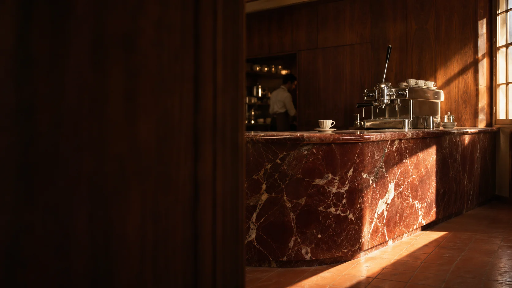
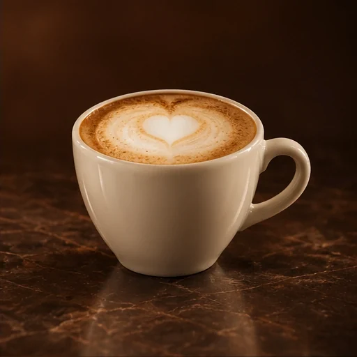
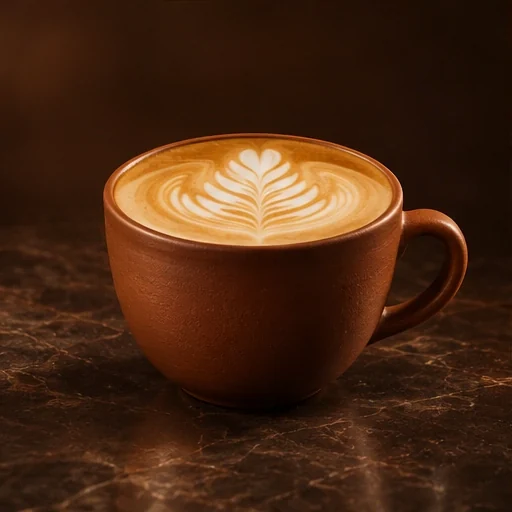
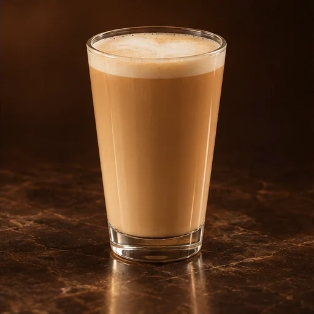
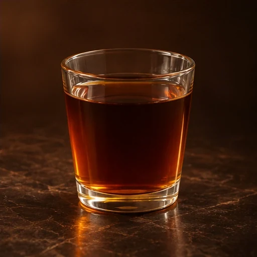
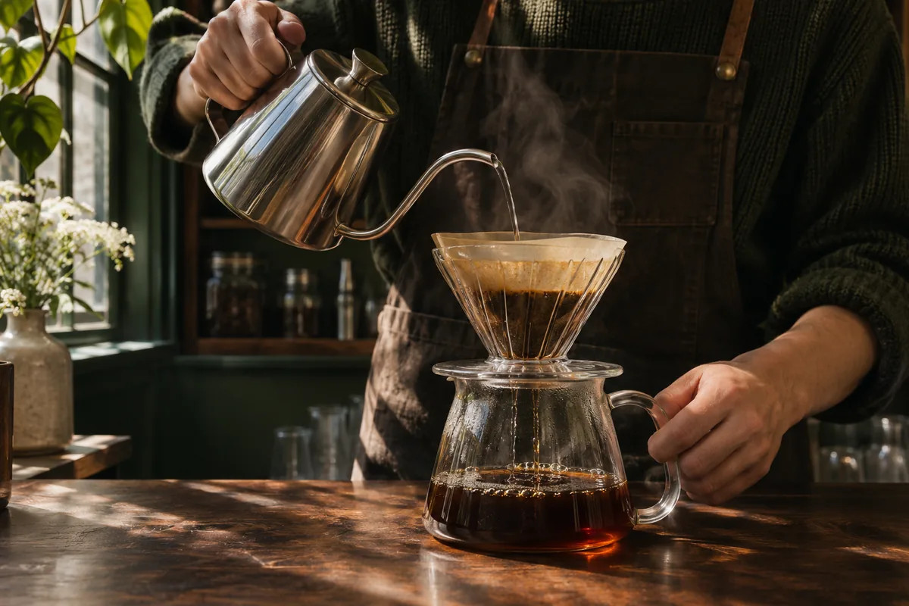

Эспрессо
Насыщенный кофе с тонкой золотистой пенкой.
Состав
Молотый кофе и вода.

За стойкой
Не удалось загрузить фильм. Открыть видеофайл
Насыщенный кофе с тонкой золотистой пенкой.
Молотый кофе и вода.
30 мл — 180 ₽ · 60 мл — 250 ₽

Горячая вода смягчает вкус эспрессо и сохраняет его аромат.
Эспрессо и горячая вода.
200 мл — 220 ₽ · 300 мл — 260 ₽

Выраженный вкус кофе под плотной шапкой молочной пены.
Эспрессо, молоко и плотная пена.
200 мл — 280 ₽ · 300 мл — 330 ₽
Овсяный или кокосовый напиток +60 ₽.

Двойная порция эспрессо и тонкая шелковистая микропена.
Двойной эспрессо, молоко и тонкий слой микропены.
200 мл — 310 ₽ · 300 мл — 370 ₽
Овсяный или кокосовый напиток +60 ₽.

Больше тёплого молока и мягкий кофейный вкус.
Эспрессо, молоко и лёгкая пена.
300 мл — 300 ₽ · 400 мл — 360 ₽
Овсяный или кокосовый напиток +60 ₽.

Заваренный через бумажный фильтр, лёгкий и чистый на вкус.
Молотый кофе и вода.
250 мл — 240 ₽ · 350 мл — 290 ₽
Насыщенный кофе с тонкой золотистой пенкой.
Молотый кофе и вода.

За стойкой
Бариста смачивает молотый кофе и делает паузу. Затем ведёт чайник по кругу. Вода медленно проходит через бумажный фильтр и собирается в стеклянном кофейнике.
Короткий фильм о кофе